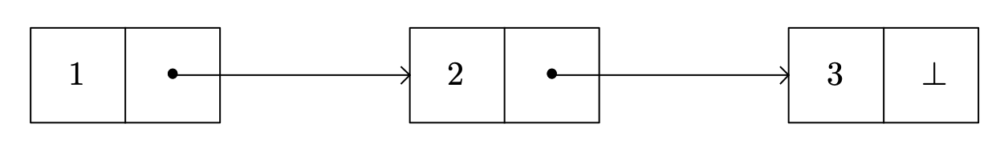
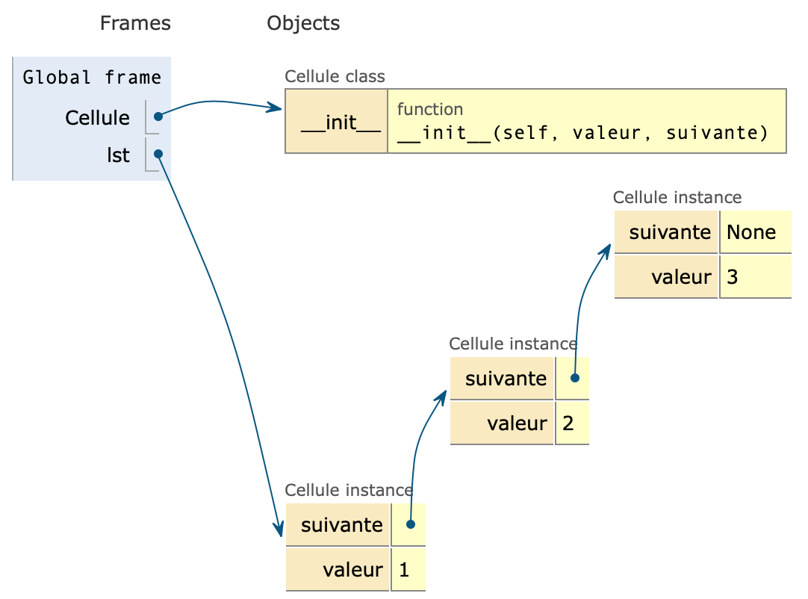
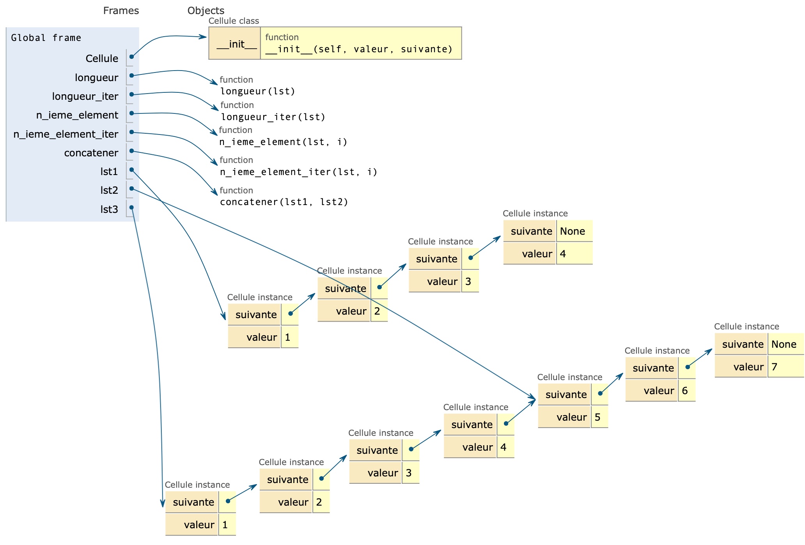
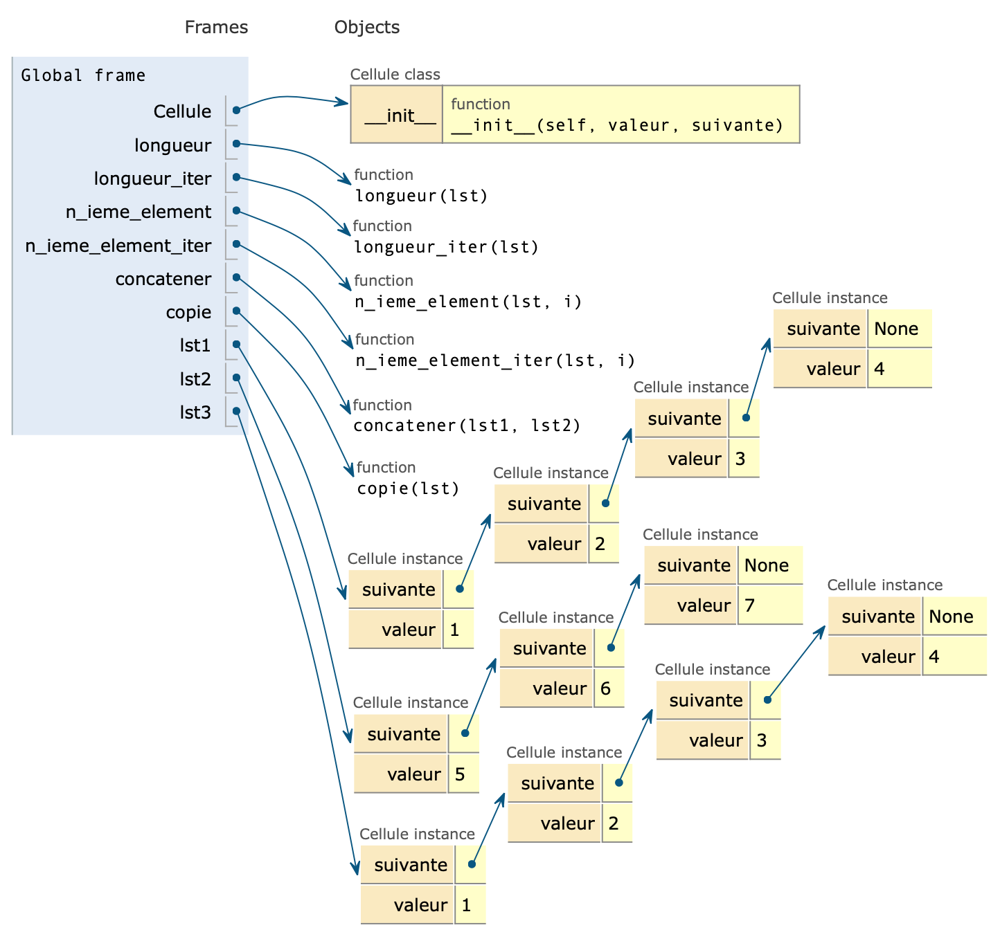
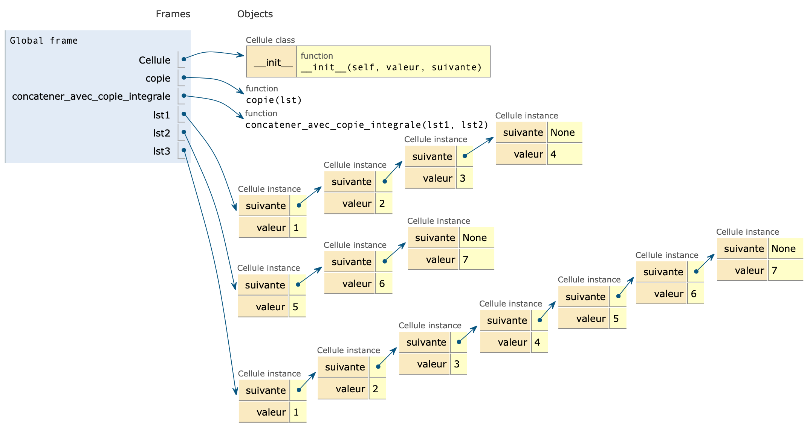
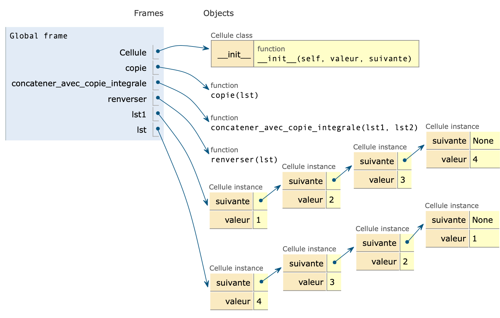

Tableaux
- Un tableau est une structure de données dans laquelle les éléments, de même type, occupent des positions contiguës en mémoire.
- Le nombre d’éléments qu’un tableau peut contenir est déterminé à la création d’un tableau.
| Type Python | Type abstrait | Opération | Exemple | Complexité |
|---|---|---|---|---|
| N’existe pas | Tableau | Accès à un élément | tab[i] |
$O(1)$ |
| Modification d’un élément | tab[i] = x |
$O(1)$ | ||
| Effacement d’un élément | retire(tab, i) |
$O(n)$ | ||
| Insertion d’un élément | insere(tab, x, i) |
$O(n)$ | ||
| Recherche d’un élément | est_dans(tab, x) |
$O(n)$ |
- La structure de données appelée « liste » dans le langage Python est en fait un tableau dynamique.
Remarque : Dans la suite de ce document, on va considérer que la liste Python tab, créé par l’instruction tab = [i for i in range(20)] est de longueur fixe. Elle se comporte alors comme un tableau.
Pourquoi la recherche d’un élément dans un tableau quelconque (non trié donc) est en $O(N)$ ?
- Écrire le prédicat
est_dansde spécification :
def est_dans(tab: List[int], n: int) -> bool:
"""
Recherche si la valeur n est présente au moins une fois
dans le tableau tab.
Algorithm itératif.
"""
-
Écrire un jeu de tests.
-
(Facultatif) Écrire le prédicat
est_dans_recde spécification :
def est_dans_rec(tab: List[int], n: int, i: int = 0) -> bool:
"""
Recherche si la valeur n est présente au moins une fois
dans le tableau tab.
Algorithme récursif, i est l'indice de recherche.
"""
- Quelle est la complexité des algorithmes précédents en fonction de $N$, la taille du tableau ?
Réponse
- Dans l’algorithme itératif, dans le pire des cas (valeur absente du tableau) $N$ tours de boucle sont effectués.
- Dans l’algorithme récursif, $N$ appels récursifs sont effectués.
L’algorithme est donc en $O(N)$.
Pourquoi l’insertion d’un élément dans un tableau est en $O(N)$ ?
Dans cette partie, on imagine que le tableau a cette allure :
| 1 | 1 | 2 | 3 | 4 | 5 | vide | vide | vide |
|---|
Si on introduit, en position 1, la valeur 7. Le tableau est alors :
| 7 | 1 | 1 | 2 | 3 | 4 | 5 | vide | vide |
|---|
Remarque : Dans le code ci-dessous, les cellules seront considérées vides si elles contiennent la valeur None.
- Écrire la fonction
inseredont la spécification est :
def insere(tab: List[int], n: int, i: int) -> None:
"""
Insère la valeur n à l'indice i du tableau tab.
Algorithm itératif et en place.
Lève une exception si le tableau est déjà plein.
HYPOTHÈSE : la gestion des "trous" n'est pas assurée,
l'algorithme se contente de décaler les valeurs vers
la droite.
"""
- (Facultatif) Écrire la fonction
insere_recdont la spécification est :
def insere_rec(tab: List[int], n: int, i: int, k: int) -> None:
"""
Insère la valeur n à l'indice i du tableau tab.
Algorithm récursif et en place. k est l'indice de recherche. Sa première valeur doit être len(tab) - 1.
Lève une exception si le tableau est déjà plein.
HYPOTHÈSE : la gestion des "trous" n'est pas assurée,
l'algorithme se contente de décaler les valeurs vers
la droite.
"""
- Quelle est la complexité des algorithmes précédents en fonction de $N$, la taille du tableau ?
Réponse
- Dans le pire des cas (insertion à la première place du tableau), on déplace $N-1$ valeurs.
L’algorithme est donc en $O(N)$.
Structure de liste chaînée
Les listes chaînées constituent une structure de données :
- de longueur modifiable ;
- plus efficace que les tableaux lorsqu’il s’agit d’ajouter ou de retirer un élément (il n’est pas nécessaire de faire de la place en déplaçant les éléments) ;
- qui servira de brique à l’élaboration d’autres structures de données.
Une liste chaînée permet de représenter une liste ; chaque élément de cette liste est une cellule contenant :
- la valeur de l’élément à stocker ;
- l’adresse mémoire de la cellule représentant l’élément suivant.

Remarque : le symbole $\perp$ marque la fin de la liste dans les schémas.
Comment implémenter une cellule ?
En langage Python, on peut implémenter une cellule à l’aide d’une classe, de listes ou de tuples.
- Définir la classe
Celluledont la spécification est :
class Cellule():
"""
Implémentation d'une cellule de liste chaînée
de nombres entiers.
Attributs
---------
valeur : int
Valeur à stocker dans la liste
suivante : Cellule
Addresse de la cellule suivante (chaînée)
"""
None qui représente donc une cellule vide.
-
Instancier 3 objets
c1,c2,c3, de typeCellule, dont les valeurs sont 1, 2, 3.
Tous ces objets sont pour l’instant isolés (ils ne pointent vers aucune autre cellule si ce n’est la cellule videNone). -
Créer la liste
lstà l’aide de ces trois objets. -
Comment aurait-on pu créer la liste
lsten une seule instruction ?

Les listes chaînées sont des structures fondamentalement récursives
Une liste chaînée est :
- soit la liste vide (objet
None) ; - soit constituée de son premier élément (objet de type
Cellule) et du reste des éléments qui forment aussi une liste. Une liste chaînée est donc une structure récursive.
Une liste chaînée est-elle forcément homogène
Tout au long de ce document nous allons uniquement envisager des listes chaînées de nombres entiers. Rien n’impose, cependant, à l’attribut valeur de la classe Cellule d’être un entier. Chaque cellule peut même posséder des attributs valeur de type différent. Les listes chaînées peuvent donc être hétérogènes.
Quelques opérations sur les listes chaînées
Longueur d’une liste chaînée
- Écrire la fonction
longueurdont la spécification est :
def longueur(lst: Cellule) -> int:
"""
Détermine la longueur de la liste lst.
Algorithm récursif.
"""
- Écrire la fonction
longueur_iterdont la spécification est :
def longueur_iter(lst: Cellule) -> int:
"""
Détermine la longueur de la liste lst.
Algorithm itératif.
"""
- Déterminer la complexité du calcul de la longueur d’une liste.
Réponse
On réalise autant d’appels récursifs (ou de tours de boucles qu’il y a d’éléments dans la liste).
La complexité est donc en $O(N)$.
Affichage de tous les éléments d’une liste
- Écrire la fonction
affichage_elements_listedont la spécification est :
def affichage_elements_liste(lst: Cellule) -> None:
"""
Affiche tous les éléments de la liste lst.
Chaque élément est séparé par une tabulation "\t"
"""
Valeur du n-ième élément d’une liste
- Écrire la fonction
n_ieme_elementdont la spécification est :
def n_ieme_element(lst: Cellule, i: int) -> int:
"""
Retourne le n-ième élément de la liste. La convention
suivie est celle de Python, le premier élément ayant
l'indice i = 0.
Algorithme récursif.
Lève une exception si l'indice de la liste est trop grand.
"""
- Écrire la fonction
n_ieme_element_iterdont la spécification est :
def n_ieme_element_iter(lst: Cellule, i: int) -> int:
"""
Retourne le n-ième élément de la liste. La convention
suivie est celle de Python, le premier élément ayant
l'indice i = 0.
Algorithme itératif.
Lève une exception si l'indice de la liste est trop grand.
"""
- Déterminer la complexité de la recherche du n-ième élément d’une liste.
Réponse
- Si l’élément dont on cherche la valeur est le dernier de la liste il est nécessaire de faire $N$ appels récursifs (ou tours de boucles).
- Si l’indice est hors des limites, il est ici aussi nécessaire de parcourir toute la liste avant de s’en rendre compte. L’algorithm est donc en $O(N)$.
Modification de la valeur d’une cellule sans modifier la structure de la liste
- Écrire la fonction
modifier_n_ieme_elementdont la spécification est :
def modifier_n_ieme_element(lst: Cellule, i: int, valeur: int) -> None:
"""
Modifie le n-ième élément de la liste. La convention
suivie est celle de Python, le premier élément ayant
l'indice i = 0.
Algorithme récursif.
Lève une exception si l'indice de la liste est trop grand.
"""
Ajout d’une valeur à la fin de la liste
- Écrire la fonction
ajout_fin_listedont la spécification est :
def ajout_fin_liste(lst: Cellule, valeur: Cellule) -> None:
"""
Ajout de valeur à la fin de la liste.
Algorithme récursif.
"""
- Quelle est la complexité de la fonction
ajout_fin_liste?
Réponse
On doit parcourir toute la liste pour ajouter un élément à la fin. La complexité est donc linéaire.
Retrait du dernier élément d’une liste
- Écrire la fonction
retrait_dernier_elementdont la spécification est :
def retrait_dernier_element(lst: Cellule) -> int:
"""
Retire le dernier élément de la liste et le retourne.
Algorithme récursif.
"""
Concaténation de deux listes
- Écrire la fonction
concatenerdont la spécification est :
def concatener(lst1: Cellule, lst2: Cellule) -> Cellule:
"""
Concatène les listes lst1 et lst2. Une nouvelle liste est
créée et retournée.
Les éléments de la première liste sont copiés alors que ceux
de la deuxième sont insérés. lst1 et lst2 ne sont donc pas modifiées.
ATTENTION : tout élément de lst partagé avec lst2 modifié l'est aussi
dans lst2.
Algorithme récursif.
"""

- Écrire la fonction
copiedont la spécification est :
def copie(lst: Cellule) -> Cellule:
"""
Réalise une nouvelle copie de la liste lst.
Algorithme récursif.
"""

- Se servir de la fonction
copiepour écrire la fonctionconcatener_avec_copie_integraledont la spécification est :
def concatener_avec_copie_integrale(lst1: Cellule, lst2: Cellule) -> Cellule:
"""
Concatène les listes lst1 et lst2. Les éléments des listes lst1 et lst2
sont recopiés pour former une nouvelle liste.
Algorithme récursif.
"""

- Quelle est la complexité de la fonction
concatener? Même question pour la fonctionconcatener_avec_copie_integrale.
Réponse
- Dans le premier cas, il est nécessaire de recopier tous les éléments de
lst1. La complexité est donc linéaire et dépend du nombre d’élements delst1. - Dans le second cas, on recopie tous les éléments de
lst1et delst2. La complexité est donc linéaire et est la somme du nombre d’éléments delst1et delst2.
Renverser une liste
- Écrire la fonction
renverserdont la spécification est :
def renverser(lst: Cellule) -> Cellule:
"""
Retourne une nouvelle liste formée des éléments de lst à l'envers.
Les éléments peuvent avoir été recopiés ou pas.
Algorithme récursif.
"""
Remarque. Cette fonction doit s’appuyer sur les fonctions concatener ou concatener_avec_copie_integrale.

Remarque. Cet algorithme est particulièrement inefficace.
Conclusion
- Une liste chaînée est une structure de données utile pour représenter une séquence finie d’éléments.
- Chaque élément est contenu dans une cellule, qui fournit, en plus de la valeur, un moyen pour accéder à la cellule suivante.
- Les opérations sur les listes chaînées se programment sous la forme de parcours qui suivent ces liaisons, en utilisant la récursivité ou des boucles.